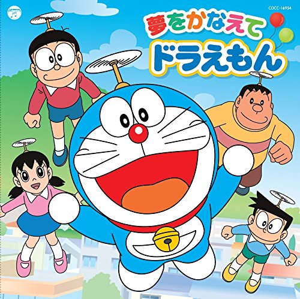
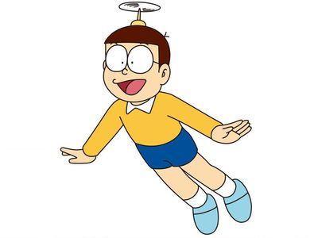
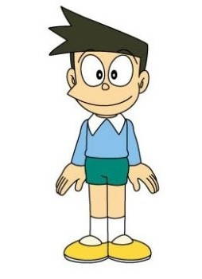

哆啦A夢
介紹
《哆啦A夢》（又稱小叮噹；英語：Doraemon），為日本漫畫家藤子·F·不二雄著作，回家第一件事就是打開電視看多拉A夢。

主題曲
主角
- 哆啦A夢

- - 喜歡吃銅鑼燒，暗戀小咪，肚子很圓，還有一個百寶袋在上面，常有人把他誤認成狸貓，性別...不明。
- 大雄

- - 好險書桌是有抽屜的，不然就遇不到哆啦A夢了。心地善良，但成績和運動細胞都很差，也喜歡偷看靜香洗澡。
- 靜香

- - 喜歡洗澡，也常被大雄偷看洗澡。
- 胖虎

- - 惡棍，常常欺負大雄，唱歌很難聽，跟我一樣。
- 小夫

- - 獨生富家子，房子很大，長得很像狐狸，個性也很狡猾。
go top